部署網站到 Azure App Service 的方式有很多種，而為了讓部署的動作能連貫且步驟是最少的，就必須整合到 DevOps 之類的服務。App service 針對部署也有提供幾個不錯的功能，這一篇文章會先從 Deployment Center (部署中心) 開始
Azure App Service 的部署中心，支援多種版控服務，像是 Azure Repos、GitHub、Bitbucket、Local Git 還有一些檔案服務等，這篇文章，我們使用 GitHub 來作為持續部署的程式來源
基本設定操作
-
建立 GitHub Repo
-
建立一個簡單的 Razor Page 網站，並將其推送到 GitHub Repo 上
-
建立 Azure App Service
-
點選 部署中心 (Deployment Center)
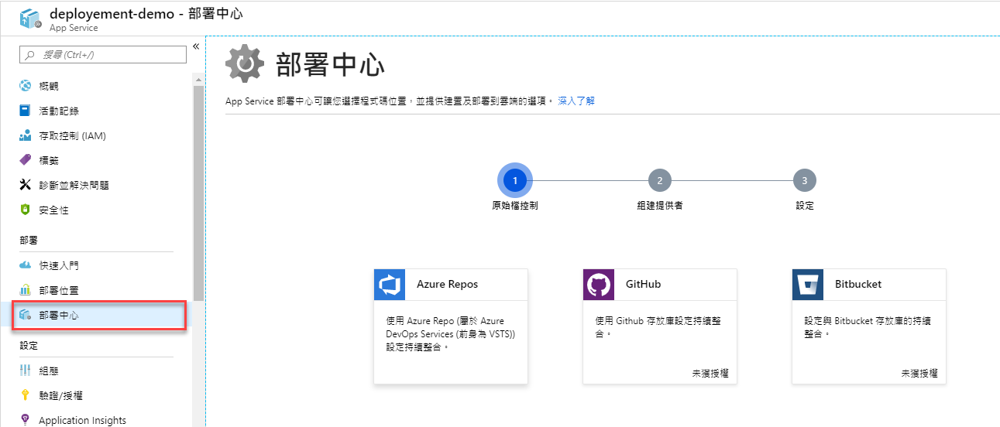
-
選擇原始檔控制，我這裡選擇 GitHub，由於第一次尚未授權，所以要先進行授權
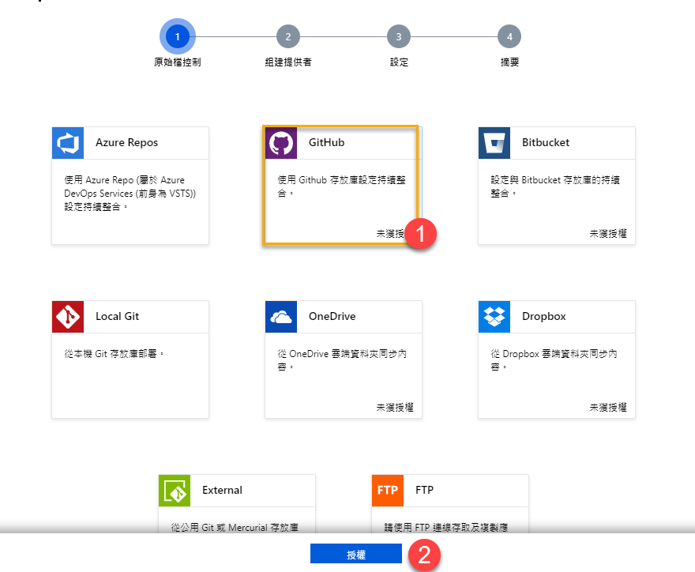
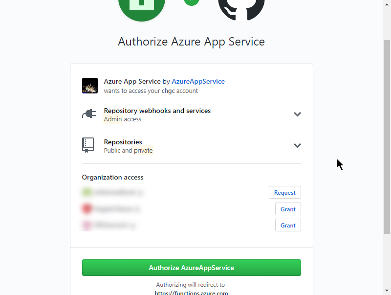
完成授權，點選【繼續】
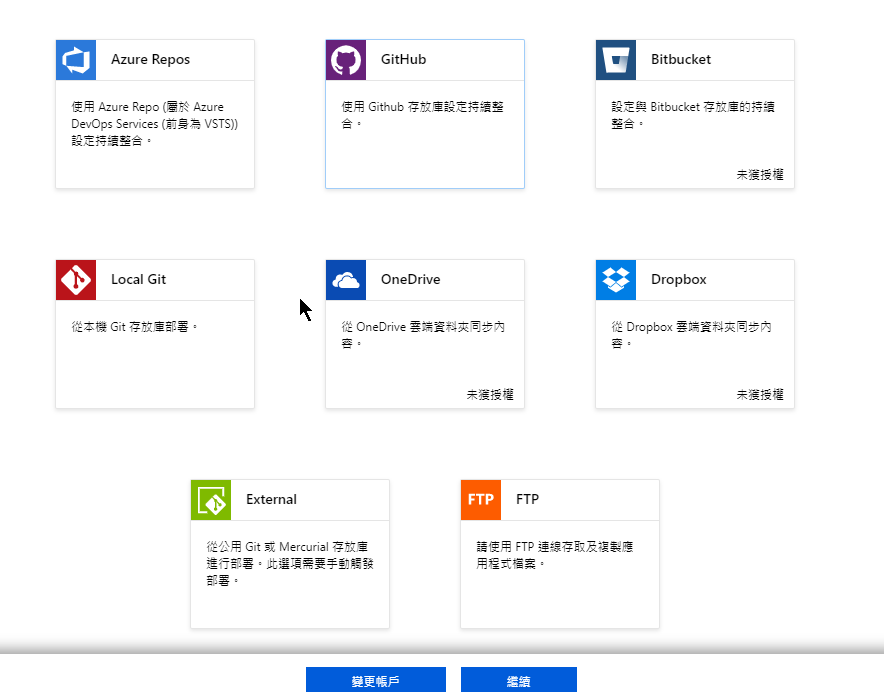
-
選擇【組件提供者】，這邊選擇 App Service 組件服務 後，繼續下一步
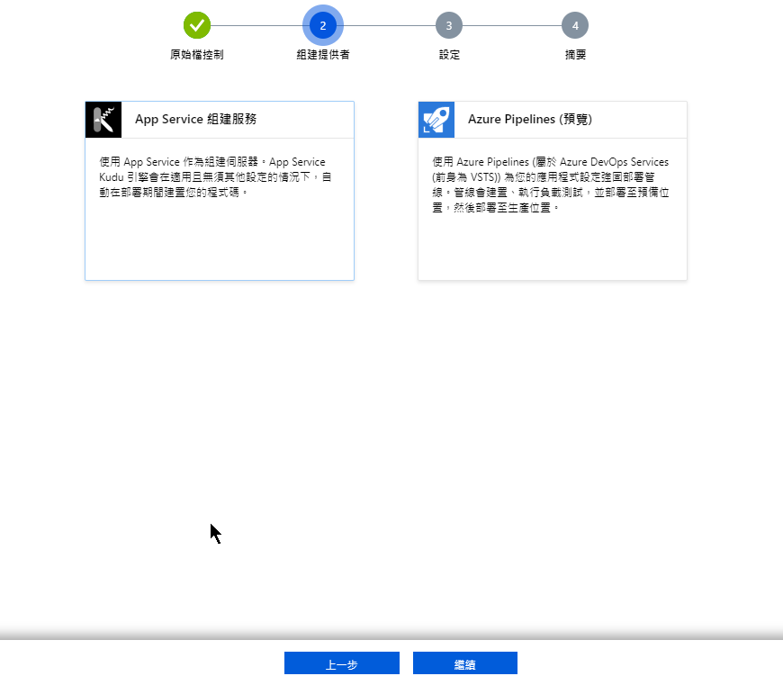
-
進入設定頁面，如果選擇不到 Repo 的話，那表示在 GitHub 這邊還需要在設定一些東西
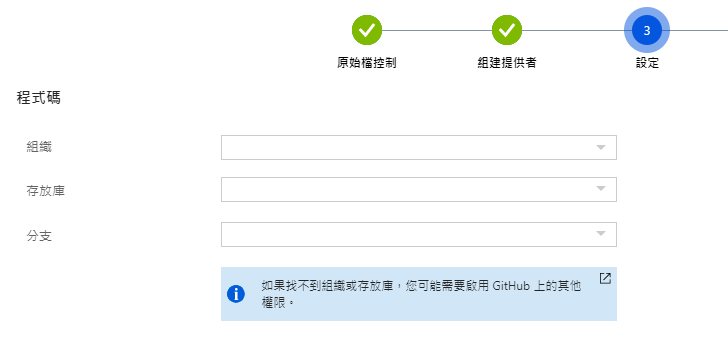
-
前往 GitHub ，進入 【Setting】頁面

-
進入 【Application】 並選擇 【Authorized OAuth Apps】，找到 Azure App Service
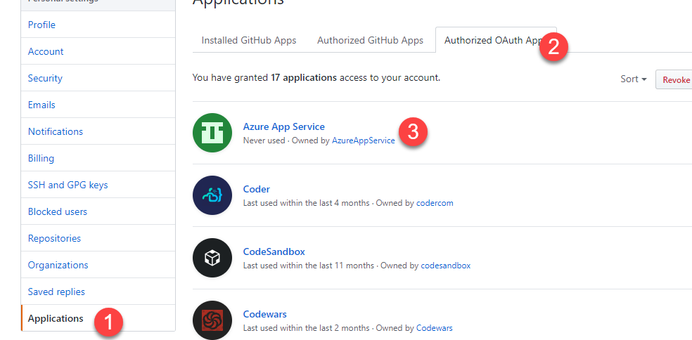
-
將尚未授權的 Orgranization ，開放權限 (Grant)
-
如果還沒有看到，重新整理畫面，並重新做一次 Deployment Center 的設定畫面，應可以看到相關資訊了
-
-
選擇要部署的 Repo 來源
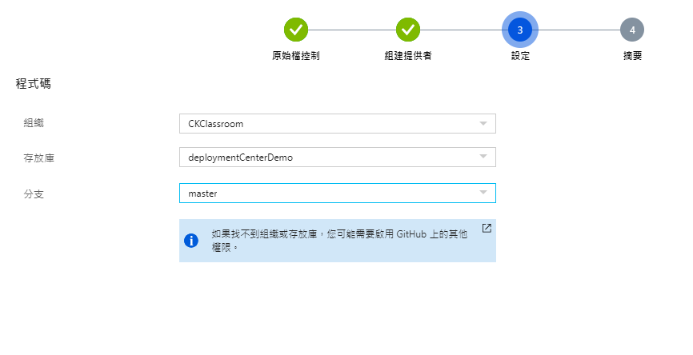
-
繼續進入最終步驟，確認完成。
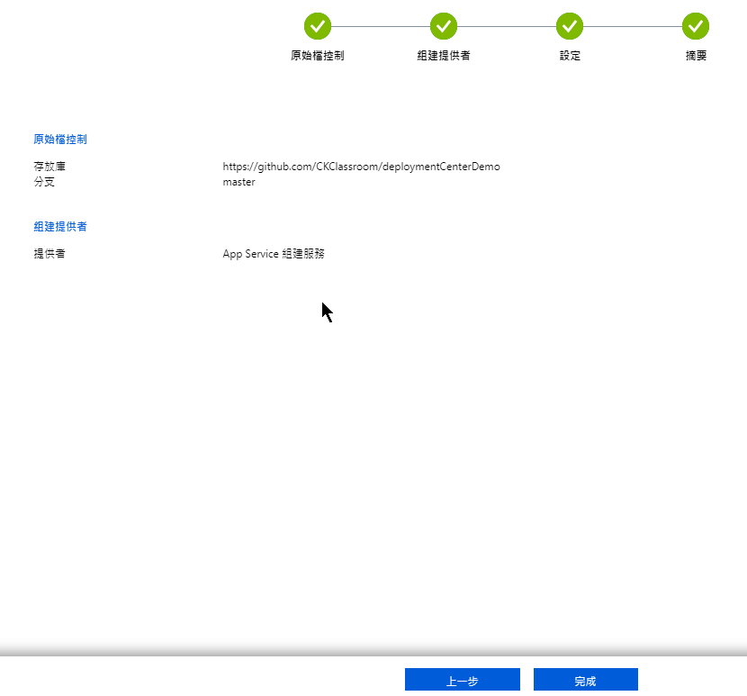
-
完成設定
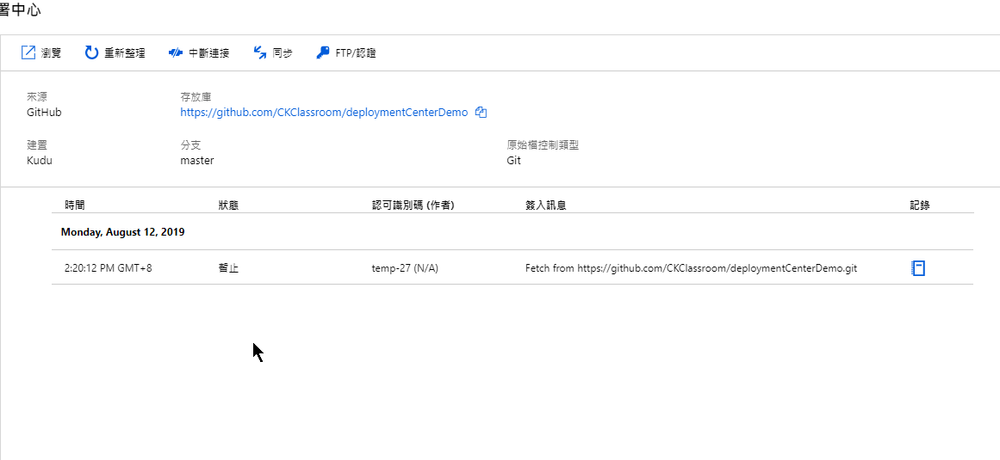
-
第一次部署成功
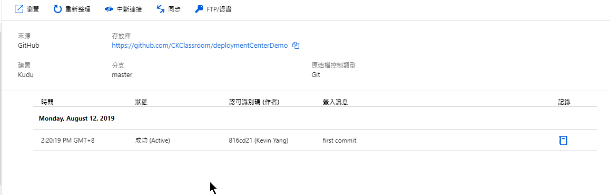
-
執行結果。太棒了，看到畫面
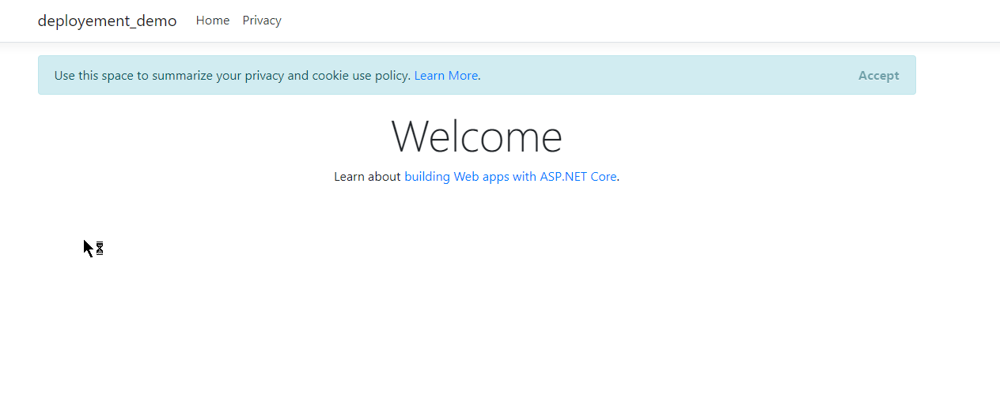
第二次 Commit
嘗試修改一些文字並 commit 到 GitHub 上後，觀察看看部署中心是否有做到自動建置部署的動作
當 commit push 到 GitHub 上，在部署中心的頁面上，會發現第二次 Commit 的訊息
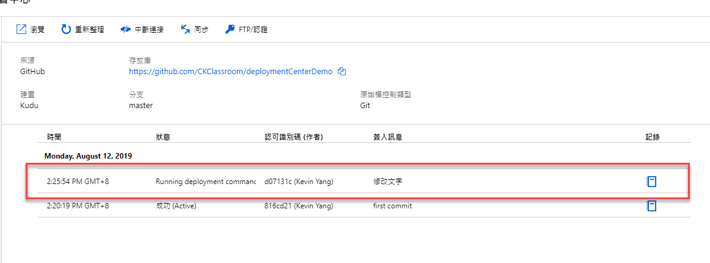
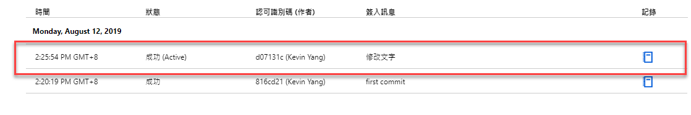
修改後的畫面
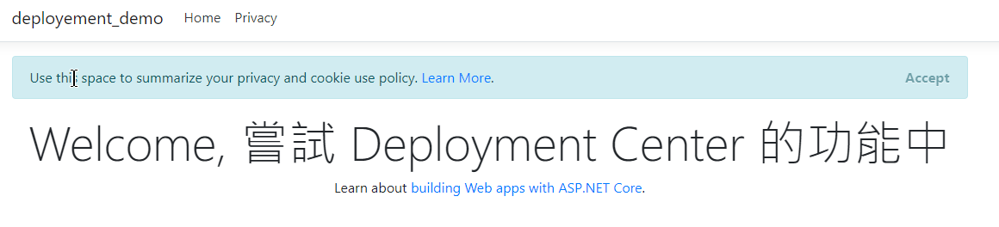
可以看到順利修改後的結果，這代表整個流程已可以正常運作了
退版
有時候在 commit 時，發現上的版本有重大問題需要退版時，透過部署中心可以快速做到退版，以下是操作步驟
-
選擇想要退版的 commit 紀錄

-
點選【重新佈署】
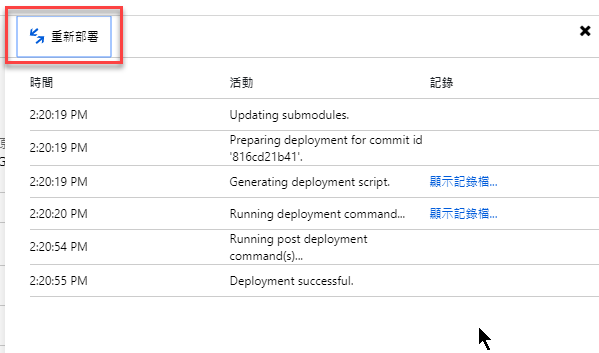
-
退版成功
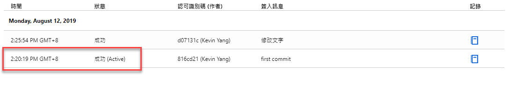
就是這麼簡單
結論
雖然 GitHub 是很常見好用的程式碼寄放的位置，但如果要跟 Azure App Service 整個的部署整合更流暢，我相信使用 Azure DevOps 的服務會是最佳選擇